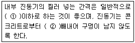
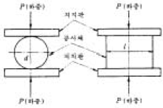

콘크리트기능사 (2005-04-03 기출문제)
1과목: 콘크리트재료
1. 골재의 수분함량상태를 나타내는 용어중 가장 많은 양의 수분을 나타내는 것은?
- 유효흡수량
- 표면수량
- 흡수량
- 함수량
(정답률: 72%)

2. 댐과 같은 콘크리트 단면이 큰 공사에 가장 적합한 시멘트는?
- 중용열 포틀랜드 시멘트
- 보통 포틀랜드 시멘트
- 고로 시멘트
- 백색 포틀랜드 시멘트
(정답률: 89%)
3. 골재에서 F.M(Fineness Modulus)이란 무엇을 뜻하는가?
- 입도
- 조립률
- 잔골재율
- 골재의 단위량
(정답률: 82%)
4. 공극률이 적은 골재를 사용한 콘크리트에 대한 설명으로 틀린 것은?
- 사용수량이 줄어들어 콘크리트의 강도가 커진다.
- 시멘트의 양이 줄어들어 경제적인 콘크리트를 만들 수있다.
- 건조수축이 작고 수밀성과 마멸저항이 큰 콘크리트를 만들 수 있다.
- 큰 수화열이 발생하여 강도가 떨어진다.
(정답률: 58%)
5. 플라이애시시멘트에 관한 설명중 옳지 않은 것은?
- 유동성이 커서 재료분리가 크다.
- 장기강도가 크다.
- 해수에 대한 저항성이 크다.
- 워커빌리티가 좋아 단위수량이 적은 콘크리트를 만들 수 있다.
(정답률: 59%)
6. 콘크리트 제조용 굵은 골재의 설명으로 틀린 것은?
- 굵은 골재는 5mm체에 거의 다 남는 골재를 말한다.
- 내구성이 있고 구형이어야 한다.
- 소량의 유기물이 포함되어야 한다.
- 강도가 크고 입도가 고르게 섞여서 표준입도 범위에 들어야 한다.
(정답률: 83%)
7. 다음 중 시멘트 저장 방법으로 부적당한 것은?
- 지상에서 30cm 이상 높은 마루에 저장한다.
- 습기가 차단되도록 방수되는 창고에 저장한다.
- 시멘트는 13포 이상 쌓토록 한다.
- 시멘트는 입하순으로 사용한다.
(정답률: 92%)
8. 시멘트의 분말도에 대한 설명으로 옳은 것은?
- 분말도가 높은 시멘트는 수화작용이 늦다.
- 분말도가 높으면 풍화하기 쉽다.
- 분말도가 높으면 수화작용에 의한 발열이 작아 균열 발생이 적다.
- 분말도가 높은 시멘트는 조기 강도가 작다.
(정답률: 61%)
9. 골재의 함수상태 중 표면건조포화상태를 설명한 것으로 옳은 것은?
- 골재 알 속의 빈틈에 있는 물을 모두 없앤 상태
- 골재 알 속의 빈틈 일부가 물로 차 있는 상태
- 골재 알의 표면에는 물기가 없고, 알 속의 빈틈만 물로 차 있는 상태
- 골재 알 속의 빈틈이 물로 차 있고, 또 표면에 물기가 있는 상태
(정답률: 81%)
10. 굵은 골재의 비중을 구하기 위하여 일정량의 시료를 정해진 과정에 따라 측정한 결과 대기중 표면건조 포화상태의 무게는 15.9kg, 물속에서의 무게는 9.9kg, 대기중 절대 건조상태의 무게는 12.6kg이었다. 이 굵은 골재의 표면건조포화 상태의 비중은?
- 2.50
- 2.55
- 2.60
- 2.65
(정답률: 35%)
11. 콘크리트가 경화되는 중에 부피를 늘어나게 하여 콘크리트의 건조수축에 의한 균열을 억제하는데 사용하는 혼화재료는?
- 포졸란
- 팽창재
- AE제
- 경화촉진제
(정답률: 76%)
12. 다음 시멘트 중에서 조기강도가 제일 큰 것은?
- 실리카 시멘트
- 조강 포틀랜드시멘트
- 알루미나 시멘트
- 슬랙 시멘트
(정답률: 70%)
13. 철근 콘크리트에서 철근이 녹슬지 않도록 사용하는 혼화제는?
- AE제
- 경화촉진제
- 감수제
- 방청제
(정답률: 62%)
14. 조립율 3.0, 7.0의 모래와 자갈을 무게비 1:3의 비율로 혼합할 때의 조립율을 구하면?
- 4.0
- 5.0
- 6.0
- 8.0
(정답률: 67%)
15. 감수제의 사용효과 중 옳지 않은 것은?
- 시멘트 풀의 유동성을 감소시킬 수 있다.
- 워커빌리티를 좋게 할 수 있다.
- 단위수량을 감소시킬 수 있다.
- 수화작용을 촉진시킬 수 있다.
(정답률: 49%)
16. 포틀랜드 시멘트의 주요 화합물의 종류로 틀린 것은?
- 규산이석회
- 규산사석회
- 알루민산삼석회
- 알루민산철사석회
(정답률: 35%)
17. 주로 물의 양이 많고 적음에 따르는, 반죽이 되고 진 정도를 나타내는 굳지 않은 콘크리트의 성질은?
- 반죽질기
- 워커빌리티
- 성형성
- 피니셔빌리티
(정답률: 75%)
18. 포졸란(Pozzolan)의 종류에 해당하지 않는 것은?
- 규조토
- 규산백토
- 고로슬래그
- 포졸리스(Pozzolith)
(정답률: 83%)
19. 콘크리트의 배합설계에서 단위 수량 150kg/m3, 단위 시멘트량 315kg/m3, 공기량 3%로 결정했을 경우, 단위 골재량의 절대부피는 얼마인가? (단, 시멘트의 비중은 3.15이고 혼화재는 사용하지 않았다.)
- 0.70m3
- 0.72m3
- 0.74m3
- 0.75m3
(정답률: 42%)
20. 혼화재료의 저장에 대한 설명으로 부적당한 것은?
- 혼화제는 먼지나 불순물이 혼입되지 않고 변질되지 않도록 저장한다.
- 저장이 오래 된 것은 시험후 사용여부를 결정하여야 한다.
- 혼화재는 날리지 않도록 그 취급에 주의해야 한다.
- 혼화재는 습기가 약간 있는 창고내에 저장한다.
(정답률: 91%)
2과목: 콘크리트시공
21. 가경식 믹서의 콘크리트 비비기 시간은 믹서 안에 재료를 투입한 후 얼마이상을 표준으로 하는가?
- 1분 이상
- 1분 30초 이상
- 2분 이상
- 2분 30초 이상
(정답률: 90%)
22. 수밀 콘크리트를 만드는데 적합하지 않은 것은?
- 단위수량을 되도록 적게 한다.
- 물-시멘트비를 되도록 적게 한다.
- 단위굵은골재량을 되도록 크게 한다.
- AE제를 사용치 않음을 원칙으로 한다.
(정답률: 51%)
23. 콘크리트의 시방배합을 현장배합으로 고치면서 일반적으로 재료 계량의 양이 달라지지 않는 것은?
- 물
- 시멘트
- 잔골재
- 굵은 골재
(정답률: 47%)
24. 아래 문장의 ( )속에 적당한 것은?

- ① 0.5m ② 빨리
- ① 1m ② 빨리
- ① 0.5m ② 천천히
- ① 1m ② 천천히
(정답률: 70%)
25. 뿜어 붙이기 콘크리트에 관한 다음 내용 중 잘못된 것은?
- 시멘트 건(gun)에 의해 압축공기로 모르타르를 뿜어 붙이는 것이다.
- 수축균열이 생기기 쉽다.
- 공사기간이 길어진다.
- 시공중 분진이 많이 발생한다.
(정답률: 73%)
26. 높은 곳에서 콘크리트를 내리는 경우, 버킷을 사용할 수 없을 때 사용하며 콘크리트 치기의 높이에 따라 길이를 조절할 수 있도록 깔대기 등을 이어서 만든 운반기구는?
- 콘크리트 펌프
- 연직 슈트
- 콘크리트 플레이서
- 벨트 컨베이어
(정답률: 76%)
27. 기온 30℃ 이상의 온도에서 콘크리트를 타설할 때 나타나는 현상중 옳지 않는 것은?
- 소요수량의 증가
- 수송중 슬럼프(Slump)증대
- 타설 후 빠른응결
- 수화열에 의한 온도상승 증가
(정답률: 41%)
28. 일반적으로 콘크리트의 압축강도는 재령 몇일의 강도를 설계의 표준으로 하고 있는가?
- 3일
- 7일
- 21일
- 28일
(정답률: 79%)
29. 수송관 속의 콘크리트를 압축공기에 의하여 압력으로 보내는 것으로 주로 터널의 둘레 치기에 사용되는 것은?
- 버킷(bucket)
- 벨트컨베이어
- 슈트
- 콘크리트 플레이서
(정답률: 85%)
30. 콘크리트 운반도중에 재료가 분리된 경우의 처리방법에 대한 설명으로 가장 타당한 것은?
- 충분히 다시 비벼서 균질한 상태로 콘크리트를 타설하여야 한다.
- 촉진제를 사용하여 다시 비벼서 타설하여야 한다.
- 물을 넣고 다시 비벼서 소요의 워커빌리티를 확보하여 콘크리트를 타설하여야 한다.
- 재료분리가 약간이라도 진행된 경우는 전량 폐기처분한다.
(정답률: 44%)
31. 하루 평균기온이 최소 몇 ℃를 초과할 경우에 서중 콘크리트로 시공해야 하는가?
- 20℃
- 25℃
- 30℃
- 35℃
(정답률: 61%)
32. 다음은 콘크리트 각 재료의 계량 허용오차(%)의 기준을 나타낸 것이다. 바르게 표시된 것은?
- 물 1% 이내
- 시멘트 2% 이내
- 골재 2% 이내
- 혼화제 용액 2% 이내
(정답률: 66%)
33. 단위 잔골재량의 절대 부피가 0.253m3이고, 잔 골재의 비중이2.60일 때 단위 잔골재량은 몇 kg/m3인가?
- 658
- 687
- 693
- 721
(정답률: 38%)
34. 물-시멘트비가 44%, 단위시멘트량이 250kg/m3일 때 단위수량을 구한 값은?
- 1⑤kg/m3
- 110kg/m3
- 115kg/m3
- 120kg/m3
(정답률: 49%)
35. 콘크리트의 배합표시법에서 각 재료의 단위량의 설명으로 옳은 것은?
- 콘크리트 1m2를 만드는데 필요한 각 재료의 양 (㎏)을 말한다
- 콘크리트 1m3를 만드는데 필요한 각 재료의 양 (㎏)을 말한다
- 콘크리트 1㎏를 만드는데 필요한 각 재료의 양 (m2)을 말한다
- 콘크리트 1㎏를 만드는데 필요한 각 재료의 양 (m3)을 말한다
(정답률: 75%)
36. 콘크리트의 운반방법으로 옳지 않은 것은?
- 운반시간이 짧은 것이 좋다.
- 재료분리가 적은 것이 좋다.
- 경제적인 방법으로 운반해야 한다.
- 공기량의 변화가 큰 것이 좋다.
(정답률: 91%)
37. 다음 중 콘크리트의 배합을 결정하는 방법이 아닌 것은?
- 계산에 의한 방법
- 배합표에 의한 방법
- 시험 배합에 의한 방법
- 재하 시험에 의한 방법
(정답률: 58%)
38. 보통 포틀랜드 시멘트의 습윤양생 기간은 최소 몇일 이상인가?
- 5일 이상
- 10일 이상
- 15일 이상
- 20일 이상
(정답률: 68%)
39. 한중 콘크리트는 양생 중에 온도를 최소 얼마 이상으로 유지해야 하는가?
- 0 ℃
- 5℃
- 15℃
- 20℃
(정답률: 78%)
40. 해양콘크리트의 최대 물-시멘트비로 가장 적당한 것은?
- 45% 이하
- 45∼50%
- 50∼55%
- 55% 이상
(정답률: 40%)
3과목: 콘크리트 재료시험
41. 포틀랜드 시멘트 콘크리트의 슬럼프 시험에 대한 설명으로 옳은 것은 ?
- 콘크리트가 내려앉은 길이를 0.5cm의 정밀도로 측정한다.
- 시료는 슬럼프 콘의 높이를 3등분하여 3층으로 나누어 넣고 가운데 층만 25회 다진다.
- 슬럼프 콘에 시료를 채우고 벗길때 까지의 전작업 시간은 3분 30초 이내로 한다.
- 슬럼프 콘 벗기는 작업은 10초 정도로 천천히 해야 한다.
(정답률: 43%)
42. 콘크리트의 압축강도 시험시 공시체의 함수상태는 어떤 상태로 해야 하는가?
- 노건조상태
- 공기중건조상태
- 표면건조포화상태
- 습윤상태
(정답률: 31%)
43. 콘크리트의 블리딩 시험을 통하여 판정할 수 있는 것은 무엇인가?
- 재료분리의 경향
- 응결, 경화의 시간
- 워커 빌리티의 상태
- 시멘트의 비중
(정답률: 43%)
44. 시방배합에서 단위수량 165kg/m3, 잔골재량 620kg/m3, 굵은골재량 1,300kg/m3이다. 현장배합으로 고칠 때 표면수량에 대한 조정을 하여 조정된 수량은 몇 kg/m3인가? (단, 잔골재 표면수량 1%, 굵은골재 표면수량 2%이며, 입도 조정은 무시한다.)
- 122
- 126
- 130
- 133
(정답률: 19%)
45. 다음 그림과 같은 콘크리트의 시험 방법은?

- 압축강도시험
- 인장강도시험
- 휨강도시험
- 블리딩시험
(정답률: 38%)
46. 잔골재의 비중 및 흡수율 시험을 1회 수행하기 위해 표면건조 포화상태의 시료는 최소 몇 g이상을 사용하는가?
- 100g
- 500g
- 1,000g
- 5,000g
(정답률: 58%)
47. 골재의 안정성 시험은 무엇을 얻기 위한 목적으로 시험을 실시하는가?
- 골재의 단위중량
- 골재의 입도
- 기상작용에 대한 내구성
- 염화물 함유량
(정답률: 67%)
48. 콘크리트의 압축강도 시험은 동일한 조건의 시료로 최소한 몇개 이상 공시체를 만들어야 하는가?
- 2개
- 3개
- 4개
- 5개
(정답률: 56%)
49. 골재알이 공기중 건조상태에서 표면건조 포화상태로 되기까지 흡수된 물의 양을 나타내는 것은?
- 함수량
- 흡수량
- 유효 흡수량
- 표면수량
(정답률: 57%)
50. 다음 중 콘크리트용 모래에 포함된 유기불순물 시험에 사용하는 시약이 아닌 것은?
- 탄닌산
- 알콜
- 황산마그네슘
- 수산화나트륨
(정답률: 45%)
51. 콘크리트 블리딩 현상을 감소시키는 방법으로 틀린 것은?
- 미립분을 적절하게 포함한 세골재를 사용한다.
- 분말도가 작은 시멘트를 사용한다.
- 단위수량을 감소시킨다.
- AE제를 사용한다.
(정답률: 36%)
52. 공기량 측정방법중 공기가 전혀 없는 것으로 하여 시방배합에서 계산한 콘크리트의 이론 단위 무게와 실제로 측정한 단위 무게와의 차이로 공기량을 구하는 방법은?
- 공기실 압력법
- 무게법
- 부피법
- 워싱턴형 공기량 측정법
(정답률: 31%)
53. 콘크리트 압축강도 시험체 만들기에서 콘크리트를 채운뒤 일정시간이 지나서 된 반죽의 시멘트 풀로 표면을 캐핑할 때 시멘트 풀의 W/C 비로 가장 적당한 것은?
- 23∼27%
- 27∼30%
- 35∼40%
- 40∼43%
(정답률: 62%)
54. 콘크리트의 슬럼프시험에 사용하는 콘의 규격으로 옳은 것은? (단, 나열순서는 밑면의 안지름, 윗면의 안지름, 높이임)
- 15cm, 10cm, 25cm
- 20cm, 15cm, 25cm
- 20cm, 10cm, 30cm
- 25cm, 15cm, 30cm
(정답률: 78%)
55. 콘크리트 공기량 시험에서 겉보기 공기량이 5.4%이고, 골재의 수정 계수가 2.3%일때, 콘크리트 공기량은?
- 2.3%
- 12.4%
- 3.1%
- 7.7%
(정답률: 65%)
56. 콘크리트 원주 시험체를 할렬시켜 인장강도를 구하고자 할때 시험공시체의 지름은 골재 최대 치수의 최소 몇배 이상이어야 하는가?
- 4/3배
- 3배
- 4배
- 5배
(정답률: 45%)
57. 블리딩량은 규정된 측정시간 동안에 생긴 블리딩 물의 양을 무엇으로 나누어 구할 수 있나?
- 시험체의 총부피
- 시험체에 함유된 물의 총중량
- 시험체의 총표면적
- 시험체의 상면의 면적
(정답률: 20%)
58. 다음 중 휨강도 시험용 공시체의 치수로 적당한 것은?
- 20 × 20 × 45cm
- 20 × 20 × 50cm
- 15 × 15 × 45cm
- 15 × 15 × 53cm
(정답률: 66%)
59. 다음 중 콘크리트의 배합설계 방법에 속하지 않는 것은?
- 겉보기 배합에 의한 방법
- 계산 배합에 의한 방법
- 시험 배합에 의한 방법
- 배합표에 의한 방법
(정답률: 73%)
60. 콘크리트 압축강도 시험용 공시체 제작시 매 층당 다짐은 몇 회인가? (시험체의 지름15cm, 높이 30cm의 경우)
- 20회
- 25회
- 30회
- 15회
(정답률: 82%)
골재의 수분함량을 나타내는 용어 중에서 가장 많은 양의 수분을 나타내는 것은 함수량입니다. 함수량은 골재 내부의 수분 함량을 나타내며, 골재의 전체 부피 중에서 수분이 차지하는 비율을 의미합니다. 따라서 함수량이 높을수록 골재 내부에 많은 양의 수분이 포함되어 있음을 나타냅니다.